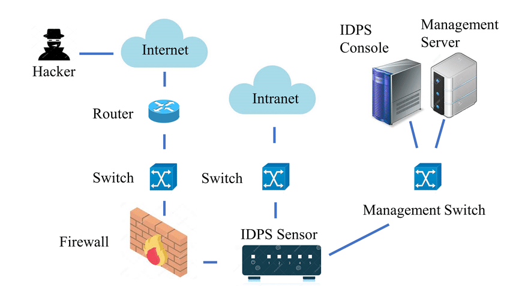
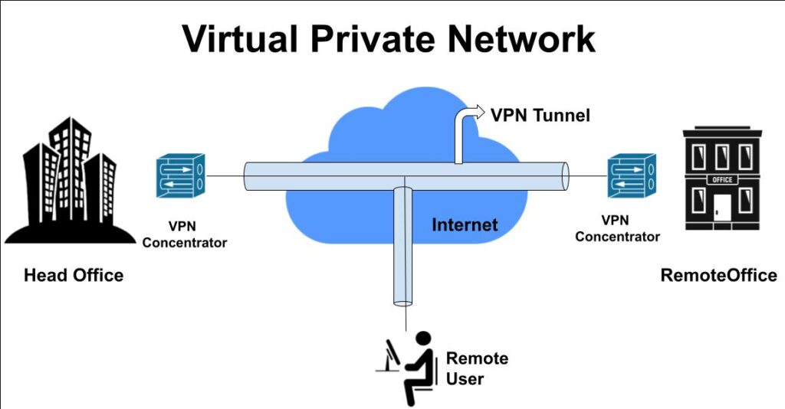
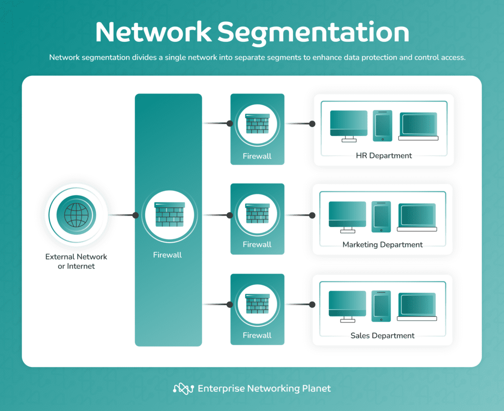

Chapter 01: Introduction to Cybersecurity
Cybersecurity refers to the practice of protecting computers, servers, mobile devices, networks, and data from malicious attacks. It’s about safeguarding the information and technology we rely on every day, ensuring that our data remains private, secure, and accessible only to those who have permission.
In today's digital age, almost everything we do is connected to the internet whether it's banking, shopping, working, or communicating. This interconnectedness makes our personal and professional information vulnerable to various threats. Cybersecurity aims to protect this information from being stolen, compromised, or misused by unauthorized individuals.
Understanding the basic concepts of cybersecurity is essential for everyone, as cyber threats can affect individuals, businesses, and governments alike. These threats can include viruses, malware, phishing attacks, and other tactics used by cybercriminals to gain access to sensitive information. By learning about cybersecurity, you can better protect yourself and your data from these threats.
1.What is cybersecurity?
Cybersecurity is the practice of protecting computers, servers, mobile devices, networks, and data from malicious attacks. It involves measures and strategies to keep information and technology secure.
2.Why is cybersecurity important in today's digital age?
Cybersecurity is crucial because almost everything we do is connected to the internet. This makes personal and professional information vulnerable to various threats, which can lead to data theft, financial loss, or privacy breaches.
3.What are some common cyber threats?
Common cyber threats include viruses, malware, phishing attacks, and other tactics used by cybercriminals to gain unauthorized access to sensitive information.
4.How does cybersecurity protect us?
Cybersecurity protects us by implementing various measures, such as firewalls, encryption, and security protocols, to ensure that our data remains private and secure from unauthorized access.
Chapter 2: Understanding Cyber Threats and How They Attack
Imagine you're in a virtual world where everything you do online is visible to a hidden enemy. These enemies are cyber threats, and they can sneak into your digital life, causing damage and stealing your information. Let’s explore these threats and understand how they operate, so we can protect ourselves.
What Are Cyber Threats?
Cyber threats are like invisible invaders in the digital world. These invaders come in different forms. Some of them, like viruses, attach themselves to files on your computer, spreading to other files and even to other computers. Think of a virus as a sneaky hitchhiker that moves from one place to another, causing trouble wherever it goes.
Types of Cyber Threats
1.Malware:
Malware is short for malicious software, and it includes a variety of harmful programs like viruses, worms, trojans, and spyware. Malware can infect your device without your knowledge and cause a range of issues from slowing down your system to stealing sensitive information. Imagine malware as a silent invader that sneaks into your system, disrupts its functions, and collects private data.
2.Spyware:
Spyware is a type of malware that spies on your activities without your consent. It monitors things like your browsing habits, passwords, and even credit card numbers. Spyware operates in the background, often undetected, quietly collecting your personal information and sending it to third parties. This is like having a spy following your every move online, observing what you do and where you go.
3.Adware:
Adware is another form of malware designed to bombard you with advertisements. While it might seem less harmful than other forms of malware, adware can slow down your device and invade your privacy by tracking your online behavior. It’s like a flood of unwanted ads popping up on your screen, making it difficult to navigate the internet.
4.Ransomware:
Ransomware is a particularly nasty form of malware. It locks you out of your own files or computer system and demands payment, usually in cryptocurrency, to release them. Think of it as a virtual kidnapper holding your files hostage until you pay a ransom. The damage can be significant, especially for businesses, as it can paralyze operations until the ransom is paid.
5.Trojan Horses:
Named after the famous story from ancient Greece, trojan horses appear to be harmless programs but contain malicious code. When installed, they give cybercriminals access to your system, often allowing them to steal data or spy on your activities. It’s like inviting an enemy into your home because they’re disguised as a friend.
6.Phishing:
Phishing is a deceptive tactic where attackers pose as legitimate entities, like banks or popular websites, in order to steal sensitive information from you. They often use fake emails or websites that look real, but their goal is to trick you into giving up your passwords, credit card numbers, or other personal data. It's like a con artist pretending to be someone they're not, hoping you'll let your guard down.
7.Denial-of-Service (DoS) Attacks:
In a DoS attack, cybercriminals overwhelm a system, server, or network with traffic until it becomes unavailable to users. This is like sending a flood of unwanted visitors to a store until the store is so crowded that no legitimate customers can enter. In more severe cases, distributed denial-of-service (DDoS) attacks involve multiple systems launching the attack at once, making it harder to stop.
8.Man-in-the-Middle (MitM) Attacks:
MitM attacks occur when an attacker secretly intercepts and alters the communication between two parties. This is like a thief listening in on your conversation with your bank and changing the information being exchanged. These attacks often happen when using unsecured public Wi-Fi networks, where attackers can eavesdrop on your activities.
9.SQL Injection:
SQL injection is a technique used by attackers to exploit vulnerabilities in a website’s database by injecting malicious code. This allows them to gain unauthorized access to the database, where they can view, modify, or delete sensitive information. It’s like sneaking through a weak spot in the wall of a secure building to access the records inside.
10.Zero-Day Exploits:
Zero-day exploits are attacks that take advantage of security vulnerabilities that are unknown to the software vendor. Because no patch or fix exists at the time of the attack, these exploits can be particularly dangerous. Think of a zero-day exploit as a burglar finding a new way into your house that even the manufacturer of your security system didn’t know existed.
11.Social Engineering
Social engineering is a technique used by cybercriminals to manipulate individuals into revealing confidential information or performing actions that compromise security. Instead of relying on technical hacking skills, social engineers exploit human psychology and trust. For example, a social engineer might pose as a trusted colleague or IT support staff to trick someone into providing their password. This type of attack can be very effective because it preys on the natural tendency of people to be helpful and cooperative.
11.Insider Threats
An insider threat comes from within an organization.
It could be a disgruntled employee, a contractor, or even someone who unintentionally causes harm through negligence.
Insider threats are particularly dangerous because the individual already has access to the organization’s systems and data.
Insider threats can take many forms. For example, a malicious insider might steal sensitive information, sabotage systems, or leak confidential data.
On the other hand, an unintentional insider threat could involve an employee accidentally clicking on a phishing link or sending an email containing sensitive information to the wrong recipient.
Organizations need to be aware of the risks posed by insider threats and implement strategies to mitigate them.
This might include monitoring employee activity, restricting access to sensitive data, and providing regular security training.
Building a culture of security awareness within an organization can also help reduce the likelihood of insider threats.
How Do Cyber Attacks Happen?
1.Phishing
- Cybercriminals send an email that appears to be from a trusted source, such as a bank or a well-known company.
- The email usually contains a link that directs the victim to a fake website designed to look like a legitimate one.
- Once the victim enters their credentials or personal information, the attacker captures this data and can use it for fraudulent activities.
2. Malware
- Malware can be delivered through email attachments, infected software downloads, or vulnerabilities in software.
- Once installed, malware can perform various malicious actions, such as stealing data, encrypting files for ransom (ransomware), or allowing unauthorized access to the system (trojans).
- Attackers may use malware to create botnets, networks of infected devices, to carry out large-scale attacks like Distributed Denial of Service (DDoS).
3. Social Engineering
- An attacker might impersonate a trusted figure (e.g., an IT support technician) and persuade an employee to reveal their password or grant access to a secure system.
- Techniques such as pretexting, baiting, or tailgating are commonly used in social engineering to bypass security measures without the need for technical hacking.

4. SQL Injection
- Attackers identify input fields (like login forms) that are not properly sanitized.
- They insert SQL code that can manipulate the database for example, gaining unauthorized access to data, modifying records, or even deleting data.
- If successful, the attacker can view sensitive information, such as usernames, passwords, or personal data, directly from the database.

5. Man-in-the-Middle (MitM) Attacks
- The attacker places themselves between the victim and the intended recipient, often through an unsecured or compromised Wi-Fi network.
- The attacker can eavesdrop on the communication, capturing sensitive data like login credentials or personal information.
- In some cases, the attacker can modify the communication, leading to data theft or unauthorized actions, such as redirecting funds in a financial transaction.

6. Denial-of-Service (DoS) and Distributed Denial-of-Service (DDoS) Attacks
- In a DoS attack, a single source sends a massive amount of traffic to a target system, overwhelming it and causing it to crash or become unresponsive.
- In a DDoS attack, multiple systems (often part of a botnet) coordinate to send traffic to the target, making it even harder to defend against.
- These attacks are often used to disrupt services, cause financial loss, or distract from other malicious activities occurring simultaneously.
8. Insider Threats
- Insiders may intentionally leak, steal, or damage data for personal gain, revenge, or due to coercion by external attackers.
- Unintentional insider threats occur when employees unknowingly compromise security, such as by clicking on phishing links or using weak passwords.
- Insiders can bypass many security measures, making these threats particularly challenging to detect and prevent.
How Do Cybercriminals Benefit?
Cybercriminals are often motivated by financial gain, but there are other reasons as well.
Some attackers are after sensitive information, such as passwords or personal data,which they can sell on the dark web or use for identity theft.
Others may seek to disrupt services, cause chaos, or steal intellectual property. Some hackers even engage in cybercrime as a form of protest, in which case their motivations may be political or ideological.
This is known as hacktivism.
For example, financially motivated hackers might target bank accounts, credit card details, or cryptocurrency wallets.
Meanwhile, state-sponsored attackers may attempt to gain access to classified information or disrupt the infrastructure of another country.
Hacktivists may deface websites or spread political messages to promote their cause.
Why Is Cybersecurity Important?
The rise of cyber threats has made cybersecurity more important than ever.
Effective cybersecurity measures help protect individuals, companies, and governments from attacks that could compromise sensitive information, cause financial loss, or disrupt services.
Imagine you have a treasure chest full of valuable items—without proper locks and guards, anyone could walk up and steal what’s inside.
Cybersecurity involves everything from updating your software regularly to installing antivirus programs and using strong passwords.
Larger organizations may also implement firewalls, encryption, and intrusion detection systems to protect their networks.
Keeping your digital environment secure is just as important as locking the doors to your house—it keeps out unwanted intruders.
By understanding cyber threats and taking steps to protect against them, you can reduce the risk of falling victim to these invisible attackers.
Staying informed is the key to keeping your digital life safe from harm.
Chapter 3: Network Security
Introduction to Network Security
Imagine you have a valuable treasure hidden in your home. Naturally, you’d want to protect it from thieves, right? You might install locks, security cameras, and perhaps even hire a guard. In the digital world, your “home” is a network, and your “treasure” is the data and resources within that network. Network security is like the collection of tools and strategies used to protect this digital treasure. It ensures that only trusted individuals can access the network, and it safeguards against potential intruders who might want to steal or harm the data.
Importance of Network Security
Let’s dive deeper into why network security is so vital:
1.Protecting Sensitive Information
Just like you wouldn’t want strangers to see your personal letters or bank statements, it’s crucial to keep digital information like passwords, credit card numbers, and personal messages safe from unauthorized eyes. Network security helps ensure that your information stays private.
2.Ensuring Data Integrity
Imagine if someone tampered with your school grades or a company’s financial records. Network security helps keep data accurate and unaltered, making sure that what you see is exactly what was meant to be there.
3.Maintaining Availability
Think about your favorite website or online game suddenly being inaccessible. Network security works to prevent attacks that could cause such disruptions, ensuring that you can always access the services you need.
4.Compliance and Legal Requirements
Just as businesses must follow laws in the physical world, they also have to adhere to digital regulations. Network security helps organizations comply with these laws, avoiding penalties and ensuring that they protect their customers’ data.
Key Components of Network Security
Now, let’s explore the essential elements that make up network security, using some relatable analogies
1.Firewalls: The Digital Gatekeepers
Picture a castle with a sturdy gate that controls who can enter and leave. Firewalls serve a similar purpose in a network. They act as the first line of defense, filtering out harmful traffic while allowing safe data to pass through. Firewalls are like the security guards at the entrance, making sure only trusted visitors can enter the castle.

2.Intrusion Detection and Prevention Systems (IDPS): The Watchful Eyes
Think of these systems as security cameras and alarms in a building. Intrusion Detection Systems (IDS) are like cameras that monitor for suspicious activity, while Intrusion Prevention Systems (IPS) are the alarms that not only detect but also respond to threats, blocking them before they cause harm. Together, they keep a constant watch over the network, ensuring that any signs of danger are quickly addressed.
3.Virtual Private Networks (VPNs): The Secure Tunnels
Imagine you need to send a secret message to a friend in a distant land. You wouldn’t just shout it out loud; instead, you’d use a secure method, like a sealed envelope or a private tunnel. VPNs create these secure tunnels over the internet, ensuring that your data is encrypted and safe from prying eyes as it travels between your device and a private network.
4.Encryption: The Secret Code
Remember those spy movies where characters use secret codes to communicate? Encryption is like that—transforming your data into a coded format that only those with the right key can understand. Whether your data is being stored or sent across the internet, encryption ensures that only authorized people can access it.

5.Access Control: The VIP List
Imagine a club with a strict guest list. Only those on the list are allowed in, and they can only access certain areas based on their status. Access control in network security works similarly—it verifies who you are (authentication) and decides what you’re allowed to do (authorization). This ensures that people only have access to the information and resources they need.
6.Network Segmentation: The Safe Zones
Picture a large house with many rooms. If a fire breaks out in one room, you’d want to contain it there, preventing it from spreading to the rest of the house. Network segmentation divides a network into smaller sections, so if one part is compromised, the damage is contained, protecting the rest of the network.
Best Practices for Network Security
1.Regular Updates and Patch Management: Keeping the Walls Strong
Just as you’d repair cracks in a castle wall, it’s essential to keep all software and hardware up to date. Regular updates and patches fix vulnerabilities that attackers could exploit.
2.Strong Password Policies: The Secure Keys
Imagine giving out your house key to anyone who asks. It’s crucial to have strong, unique passwords (the “keys”) for accessing network resources. Multi-factor authentication adds another layer of security, ensuring that even if one key is stolen, the attacker can’t easily gain access.
3.Security Awareness Training: Educating the Defenders
Just as you’d train soldiers to defend a castle, educating users about network security is vital. This training helps people recognize threats and understand how to respond to them, making the entire network more secure.
4.Monitoring and Logging: The Watchtowers
Constantly monitoring network traffic and keeping logs is like having watchtowers around the castle, keeping an eye on everything that happens. If something suspicious occurs, the defenders can quickly react to prevent damage.
5.Incident Response Planning: The Emergency Plan
Just as a castle would have a plan for dealing with an attack, having an incident response plan ensures that if a breach occurs, the team knows exactly what to do. This minimizes damage and helps the network recover quickly.
Chapter 04: Data Protection and Encryption
Importance of Data Protection
Data protection is a fundamental aspect of cybersecurity, essential for safeguarding sensitive information from unauthorized access, misuse, or theft. In today’s digital age, vast amounts of data are generated, transmitted, and stored daily. This data often includes personal details, financial information, intellectual property, and other valuable assets that need to be protected from cyber threats.
The importance of data protection stems from several key factors. First and foremost, it helps to maintain the privacy and confidentiality of individuals. Protecting personal data is not only a moral obligation but also a legal requirement in many regions. Regulations like the General Data Protection Regulation (GDPR) in Europe and the California Consumer Privacy Act (CCPA) in the U.S. impose strict rules on how data should be handled, with severe penalties for non-compliance.
Additionally, data protection is crucial for maintaining trust between organizations and their customers. When a company demonstrates that it takes data security seriously, it reassures customers that their information is in safe hands. On the contrary, data breaches can severely damage a company’s reputation, leading to loss of customers and revenue.
Protecting data also helps prevent financial losses. Cyberattacks that target sensitive information can result in costly consequences, including fines, legal fees, and the expenses associated with recovering from a breach. Moreover, data protection ensures the integrity and availability of data, which is vital for business operations. If critical data is lost or compromised, it can disrupt operations and lead to significant downtime.
In summary, data protection is essential for safeguarding personal privacy, maintaining trust, preventing financial losses, and ensuring the smooth operation of businesses. It is a critical component of cybersecurity that requires constant attention and robust measures to effectively combat the growing threats in today’s digital landscape.
Encryption Techniques and Best Practices
What is Encryption?
Encryption is like turning your information into a secret code that only certain people can read. Think of it like sending a message in a language that only you and the receiver understand. Even if someone tries to intercept the message, they won’t be able to make sense of it unless they have the key to decode it.
Types of Encryption:
Symmetric Encryption: Uses the same key for both locking (encrypting) and unlocking (decrypting) the data. It's like using a padlock where you and your friend both have the same key. It's fast and efficient, best for encrypting large amounts of data.

Asymmetric Encryption: Uses two different keys – a public key for encrypting and a private key for decrypting. Imagine sending a locked box to someone, but only they have the key to open it. Ideal for securely exchanging information over the internet, such as sending an email or making online transactions.

Hashing: Converts data into a fixed-size string of characters, which acts as a unique digital fingerprint. Commonly used for storing passwords securely.

Best Practices for Encryption:
Use Strong Keys: The longer and more complex the key, the harder it is for someone to crack the code. Use keys that are at least 256 bits long for strong encryption.
Keep Your Keys Safe: If someone gets hold of your key, they can unlock your data. Store your encryption keys in a secure place, separate from the data they protect.
Encrypt Sensitive Data Always: Whether it’s in transit (moving from one place to another) or at rest (stored on a device), your data needs protection. Encrypt all sensitive data, including emails, files, and backups.
Use Up-to-Date Encryption Protocols: Encryption methods evolve, and older ones may no longer be secure. Ensure you’re using the latest encryption standards like AES (Advanced Encryption Standard).
Combine Encryption with Other Security Measures: Encryption is powerful, but it’s even stronger when paired with other security tools. Use encryption alongside firewalls, antivirus software, and multi-factor authentication.
How Does Encryption Protect Your Data?
When you encrypt your data, you’re making sure that even if a cybercriminal intercepts it, they won’t be able to read or use it. Encryption acts like a shield that keeps your sensitive information safe from prying eyes. For example, when you shop online or send a secure email, encryption ensures your payment details and personal information remain confidential.
Interactive Example:
Let's Encrypt! Imagine you have a message like, "Cybersecurity is essential." Using a simple encryption method (like replacing each letter with the one that comes after it in the alphabet), it becomes "Dzcfstfdvsjuz jt fttfojbm." This is just a basic form of encryption, but it shows how data can be transformed to keep it secure.
In a real-world scenario, the encryption techniques used are much more complex, but the idea remains the same – turning information into something unreadable without the right key.
Protecting Data in Transit and at Rest
In the digital age, data is always on the move. Whether it's being sent across networks or stored on devices, it needs protection at every step. There are two key stages where data needs to be safeguarded: when it's in transit (moving from one place to another) and when it's at rest (stored on a device or server).
Protecting Data in Transit
Data in transit refers to information that is actively moving from one location to another, such as when you send an email, make an online payment, or transfer files to the cloud. During this journey, data is vulnerable to interception by hackers who might try to steal or manipulate it.

To protect data in transit,
Encryption is essential. Encrypting the data ensures that even if someone intercepts it, they can't read or use it without the proper key. Protocols like HTTPS, SSL/TLS, and VPNs help encrypt data during transmission, making it secure.
Secure Channels: Always use secure, trusted channels for communication. Avoid public Wi-Fi networks for transmitting sensitive information, as they are often less secure.
Two-Factor Authentication (2FA): Adding an extra layer of security by requiring two forms of identification helps protect access to data during transit.
Protecting Data at Rest
Data at rest is information that is stored on a device or server, such as files on your computer, databases on a company server, or information stored in the cloud. Although data at rest isn't moving, it still needs strong protection to prevent unauthorized access.
To protect data at rest:
Encryption is also vital here. Encrypting stored data ensures that even if someone gains access to the storage system, they can't understand or use the data without the decryption key.
Access Controls: Limit who can access the data by using strong passwords, biometric authentication, and role-based access controls. This helps ensure that only authorized individuals can reach the sensitive information.
Regular Backups: Keeping regular backups of your data ensures that even if it's compromised, you have a secure copy available.
Physical Security: Don't forget about the physical security of devices and servers. Locked rooms, surveillance, and restricted access areas add an extra layer of protection.
Why It Matters
Both data in transit and at rest are prime targets for cybercriminals. Protecting data at these stages is crucial to prevent data breaches, identity theft, and financial loss. By implementing encryption, secure channels, and access controls, you create strong defenses that keep your data safe, whether it’s on the move or being stored.
Ultimately, safeguarding data at all times ensures privacy, maintains trust, and upholds the integrity of information in both personal and professional environments.
Chapter 5: Identity and Access Management (IAM)
Welcome to Chapter 5, where we dive into the crucial realm of Identity and Access Management (IAM). Imagine IAM as the gatekeeper to your digital kingdom, ensuring that only the right people have access to the right resources at the right time. This chapter will guide you through the core concepts, authentication and authorization methods, and best practices to secure user identities effectively.
Concepts of IAM
IAM is all about managing digital identities and controlling access to resources within an organization. Here’s what you need to know:
Definition
IAM encompasses the policies, technologies, and systems used to manage user identities and access rights within an organization.
Components of IAM:
- User Identity: Information that defines a user within the system (e.g., username, password, biometric data).
- Access Control: Rules and mechanisms that determine who can access what resources and under what conditions.
- Authentication: Verifying the identity of a user.
- Authorization: Determining what an authenticated user is allowed to do.

Authentication and Authorization Methods
Understanding how to authenticate and authorize users is essential for securing systems.
Authentication Methods:
- Password-Based Authentication: The most common method, but prone to weaknesses if passwords are not strong.
- Multi-Factor Authentication (MFA): Enhances security by requiring multiple forms of verification (e.g., something you know, something you have, and something you are).
- Biometric Authentication: Uses physical characteristics like fingerprints or facial recognition.


Authorization Methods:
- Role-Based Access Control (RBAC): Grants access based on user roles within an organization.
- Attribute-Based Access Control (ABAC): Uses attributes (e.g., department, clearance level) to make access decisions.

Best Practices for Managing User Identities
To maintain a robust IAM system, follow these best practices -
- Regularly Review Access Rights: Periodically audit user access levels and adjust permissions as needed to avoid unauthorized access.
- Implement Strong Authentication Policies: Enforce the use of complex passwords and MFA to enhance security.
- Educate Users: Provide training on the importance of security practices, including password management and recognizing phishing attempts.
- Monitor and Respond to Security Incidents: Continuously monitor access logs and be prepared to respond to any suspicious activities or breaches.
Authentication and Authorization Methods
Authentication and authorization are two foundational concepts in cybersecurity that help secure access to resources. Think of authentication as the process of verifying who you are, and authorization as determining what you can do once your identity is confirmed.
Authentication Methods
1. Password-Based Authentication
This is the most traditional form of authentication. Users provide a secret password to verify their identity.
- Strengths: Simple to implement, widely used and understood.
- Weaknesses: Passwords can be weak or easily guessed, vulnerable to attacks like brute force or phishing.

2. Multi-Factor Authentication (MFA)
MFA requires two or more verification methods, combining something you know (password), something you have (a phone or security token), and something you are (biometrics).
- Strengths: Provides enhanced security compared to single-factor authentication, reduces the risk of unauthorized access even if one factor is compromised.
- Weaknesses: Can be more complex to set up, might affect user convenience.

3. Biometric Authentication
Uses unique biological characteristics, such as fingerprints, facial recognition, or iris scans, to verify identity.
- Strengths: Difficult to replicate or steal, convenient for users as it requires minimal effort.
- Weaknesses: Can raise privacy concerns, may be less effective in certain conditions (e.g., dirty fingers or poor lighting).
4. Behavioral Biometrics
Analyzes patterns in user behavior, such as typing rhythm or mouse movements, to authenticate users.
- Strengths: Provides a continuous layer of security, hard to mimic without the actual user’s behavior.
- Weaknesses: May require complex algorithms and data analysis, can be less effective for detecting sophisticated impersonation attempts.

Authorization Methods
1. Role-Based Access Control (RBAC)
Access permissions are assigned based on user roles within an organization. For example, a manager might have access to sensitive financial reports, while a regular employee does not.
- Strengths: Simplifies management of permissions, aligns access rights with organizational roles.
- Weaknesses: Can become complex if roles are not well defined, might not handle complex scenarios where multiple attributes are required.

2. Attribute-Based Access Control (ABAC)
Access is granted based on attributes (e.g., user’s department, location, or job function) rather than predefined roles. This method provides more granular control over access rights.
- Strengths: Highly flexible and customizable, can handle complex access control scenarios.
- Weaknesses: Can be more difficult to configure and manage, requires robust attribute management and policies.
3. Policy-Based Access Control (PBAC)
Uses policies to define access rules based on various conditions, such as time of day or network location.
- Strengths: Allows dynamic and context-aware access control, can adapt to various security requirements and scenarios.
- Weaknesses: Policies can become complex and difficult to manage, may require advanced systems to enforce and monitor policies.
Best Practices for Managing User Identities
Effective identity management is crucial for safeguarding an organization's data and resources. By following best practices, you can ensure that user identities are protected from unauthorized access and misuse. Here’s how you can achieve this:
1. Regularly Review Access Rights
Regularly auditing and reviewing access rights ensures that users have appropriate permissions based on their current role and responsibilities.
- Why It’s Important: Over time, users might change roles or leave the organization, and their access rights might not be updated accordingly. Regular reviews help prevent unauthorized access and maintain security.
- Best Practices:
- Conduct Periodic Audits: Schedule regular audits (e.g., quarterly or annually) to review user access levels and adjust permissions as necessary.
- Use Automated Tools: Leverage identity management tools that offer automated auditing features to streamline the review process.
2. Implement Strong Authentication Policies
Strong authentication policies enhance security by ensuring that user identities are verified through robust methods.
- Why It’s Important: Weak authentication methods are a common target for attackers, making it essential to use strong and diverse authentication techniques.
- Best Practices:
- Enforce Complex Passwords: Require users to create passwords with a mix of letters, numbers, and special characters.
- Adopt Multi-Factor Authentication (MFA): Implement MFA to add an extra layer of security beyond passwords, such as requiring a code sent to a mobile device or biometric verification.
3. Educate Users
Training users on security best practices helps them recognize and respond to potential threats, reducing the risk of accidental breaches.
- Why It’s Important: Users are often the first line of defense against security threats. Well-informed users are more likely to follow security policies and avoid risky behaviors.
- Best Practices:
- Provide Regular Training: Offer cybersecurity awareness training sessions and refreshers to keep users up-to-date on security threats and best practices.
- Promote Security Awareness: Share tips and reminders on safe practices, such as recognizing phishing emails and handling sensitive data securely.
4. Monitor and Respond to Security Incidents
Proactively monitoring for unusual activities and having a response plan in place helps quickly address potential security breaches.
- Why It’s Important: Early detection and prompt response to security incidents can mitigate damage and prevent further compromise.
- Best Practices:
- Implement Continuous Monitoring: Use security information and event management (SIEM) systems to continuously monitor access logs and detect anomalies.
- Develop an Incident Response Plan: Create and regularly update an incident response plan detailing procedures for addressing and mitigating security incidents.
5. Utilize Role-Based Access Control (RBAC)
RBAC simplifies identity management by assigning access permissions based on user roles within the organization.
- Why It’s Important: RBAC helps ensure that users only have access to the resources necessary for their job functions, reducing the risk of unauthorized access.
- Best Practices:
- Define Clear Roles: Clearly define and document roles and associated permissions within your organization.
- Regularly Update Roles: Adjust roles and permissions as organizational changes occur to maintain appropriate access control.
6. Enforce Account Lockout Policies
Account lockout policies help protect against brute force attacks by temporarily disabling accounts after a certain number of failed login attempts.
- Why It’s Important: Account lockout prevents attackers from repeatedly guessing passwords, reducing the risk of unauthorized access.
- Best Practices:
- Set Lockout Thresholds: Define a reasonable number of failed attempts before locking out an account.
- Implement Account Lockout Duration: Specify how long an account remains locked out and how users can regain access.
Chapter 6: Endpoint Security
Securing Devices like Computers, Smartphones, and Tablets
Endpoints, such as computers, smartphones, and tablets, are prime targets for cyber threats. Securing these devices is crucial to maintaining overall cybersecurity. Here’s a comprehensive approach to protecting your endpoints:
1. Implementing Device Management Solutions
Device management solutions help monitor and control access to endpoints, ensuring they adhere to security policies.
- Mobile Device Management (MDM): Manage and secure mobile devices, including enforcing policies like encryption and remote wipe capabilities.
- Endpoint Management: Use centralized systems to manage software updates, configurations, and security settings for all endpoints.

2. Configuring Security Settings
Proper configuration of security settings on endpoints helps protect against vulnerabilities and unauthorized access.
- Firewalls: Enable firewalls on devices to block unauthorized access and monitor incoming and outgoing traffic.
- Antivirus Software: Install and regularly update antivirus software to detect and prevent malware infections.

Antivirus Software and Endpoint Protection Platforms (EPP)
1. Understanding Antivirus Software
Antivirus software detects, prevents, and removes malicious software, such as viruses, worms, and trojans.
- Real-Time Scanning: Continuously scans files and programs for threats as they are accessed or executed.
- Regular Scans: Schedule regular full system scans to identify and remove any threats that may have been missed.

2. Exploring Endpoint Protection Platforms (EPP)
Endpoint Protection Platforms offer comprehensive security features beyond traditional antivirus software.
- Features: Includes antivirus, anti-malware, firewall, intrusion prevention, and application control.
- Centralized Management: Provides a unified interface to manage security policies and monitor endpoint status.

Strategies for Mitigating Endpoint Risks
1. Implementing Regular Patching and Updates
Regularly applying patches and updates ensures that software vulnerabilities are addressed and corrected.
- Enable Automatic Updates: Configure devices to automatically download and install updates for operating systems, applications, and security software.
- Monitor for Updates: Regularly check for updates and apply them promptly.
2. Utilizing Encryption
Encryption involves converting data into an unreadable format to protect it from unauthorized access.
- Encrypt Sensitive Data: Apply encryption to sensitive files, communications, and data at rest on endpoints.
- Use Full-Disk Encryption: Enable full-disk encryption to protect all data on the device in case of theft or loss.

3. Deploying Endpoint Protection Solutions
Endpoint protection solutions offer comprehensive security features to protect against threats.
- Select Comprehensive EPP Solutions: Choose solutions offering antivirus, firewall, and intrusion prevention.
- Ensure Regular Updates: Keep endpoint protection software up-to-date to defend against the latest threats.
4. Implementing Strong Authentication Measures
Strong authentication involves using multiple methods to verify the identity of users accessing endpoints.
- Enable Multi-Factor Authentication (MFA): Require MFA for accessing endpoints, combining passwords with additional verification methods.
- Use Complex Passwords: Ensure passwords are strong and unique, avoiding common or easily guessable combinations.
5. Educating Users on Security Practices
Training users on security best practices helps them recognize and avoid potential threats.
- Conduct Regular Training: Offer ongoing training on recognizing phishing attempts, safe browsing practices, and handling sensitive data securely.
- Promote Awareness: Share updates and tips on current threats and best practices for endpoint security.
6. Monitoring and Responding to Threats
Continuous monitoring and having a response plan in place help quickly address potential security breaches.
- Use SIEM Systems: Implement systems to monitor and analyze security events from endpoints in real-time.
- Develop an Incident Response Plan: Create and regularly update a plan detailing procedures for addressing and mitigating security incidents.
7. Restricting Access with Least Privilege Principle
The least privilege principle involves granting users the minimum level of access required to perform their job functions.
- Review Access Permissions Regularly: Ensure users have appropriate permissions based on their current roles and responsibilities.
- Apply Role-Based Access Control (RBAC): Use RBAC to manage permissions and restrict access based on user roles.
Chapter 7: Secure Software Development
Principles of Secure Coding
Secure coding practices are essential for developing software that is resilient to attacks and vulnerabilities. By incorporating secure coding principles, developers can minimize risks and build robust applications.
1. Input Validation and Sanitization
Always validate and sanitize user input to ensure that it meets expected formats and values. This prevents attackers from injecting malicious data that could exploit vulnerabilities.
For example, validate email addresses to ensure they follow proper formatting rules and sanitize inputs to remove potentially harmful characters.
2. Use Parameterized Queries
When interacting with databases, use parameterized queries to prevent SQL injection attacks. Parameterized queries ensure that user input is treated as data rather than executable code.
3. Avoid Hardcoding Secrets
Never hardcode sensitive information such as passwords or API keys in your source code. Use secure methods to manage and store secrets, such as environment variables or secret management tools.
4. Implement Proper Error Handling
Handle errors gracefully and avoid exposing sensitive information in error messages. Use logging mechanisms to capture and analyze errors while keeping details hidden from end-users.
Common Software Vulnerabilities
Understanding common vulnerabilities helps developers protect their applications from known threats. Here are some prevalent vulnerabilities and how to address them:
1. SQL Injection
SQL injection occurs when an attacker manipulates a query by inserting malicious SQL code through input fields. To prevent SQL injection, use parameterized queries or prepared statements to handle user inputs safely.

2. Cross-Site Scripting (XSS)
XSS vulnerabilities allow attackers to inject malicious scripts into web pages viewed by other users. Mitigate XSS risks by validating and encoding user inputs and implementing Content Security Policies (CSP).

3. Cross-Site Request Forgery (CSRF)
CSRF attacks trick users into performing actions on a website without their consent. Implement anti-CSRF tokens to validate requests and ensure they come from authorized users.

4. Insecure Direct Object References (IDOR)
IDOR vulnerabilities occur when an attacker gains unauthorized access to objects or resources by manipulating URLs or parameters. Use access controls and validate user permissions to prevent unauthorized access.

Best Practices for Secure Software Development
Following best practices throughout the development lifecycle ensures that security is integrated into every stage of software creation. Here’s how to approach secure software development:
1. Adopt a Secure Development Lifecycle (SDL)
Incorporate security practices into every phase of the development lifecycle, from planning and design to coding, testing, and deployment. Regularly review and update security measures to address evolving threats.
Utilize security automation tools to streamline processes and identify vulnerabilities early in development.
2. Follow Secure Coding Guidelines
Adhere to secure coding guidelines to minimize risks. Validate user input, avoid hardcoding secrets, and implement proper error handling. These practices help protect against common vulnerabilities and improve code security.
3. Perform Regular Security Testing
Conduct security testing, including penetration testing, static and dynamic analysis, and vulnerability assessments. Integrate these tests into CI/CD pipelines to catch issues early and ensure ongoing security.
4. Implement Access Controls and Authentication Mechanisms
Use strong authentication methods, such as multi-factor authentication (MFA), and apply the principle of least privilege to manage user access. Protect APIs with proper authentication and authorization controls.
5. Protect Data in Transit and at Rest
Encrypt sensitive data both in transit and at rest to safeguard against unauthorized access. Use strong encryption algorithms and manage cryptographic keys securely.
6. Educate and Train Developers
Provide ongoing security training for developers to keep them informed about the latest threats and secure coding practices. Promote a security-aware culture within the development team.
Chapter 8: Incident Response and Recovery
Steps for Effective Incident Response
Incident response is a structured approach to managing and addressing security incidents. An effective incident response can help mitigate damage, recover from disruptions, and improve future security posture. Here’s how to handle incidents effectively:
1. Preparation
Before an incident occurs, ensure that you have an incident response plan in place, establish a response team, and train staff. Preparation involves setting up necessary tools and protocols to handle potential incidents.
2. Identification
Detect and identify the incident as soon as possible. This includes recognizing unusual activity or breaches and confirming whether they constitute an actual incident.
3. Containment
Contain the incident to prevent further damage. This may involve isolating affected systems, blocking malicious traffic, or disabling compromised accounts.
4. Eradication
Remove the root cause of the incident from the environment. This could involve eliminating malware, closing vulnerabilities, or addressing any exploited weaknesses.
5. Recovery
Restore affected systems and services to normal operation. This includes validating system integrity and monitoring for any signs of residual or returning threats.
6. Lessons Learned
Conduct a post-incident review to evaluate the response process and identify areas for improvement. Document what worked well and what could be improved for future incidents.
Creating and Implementing an Incident Response Plan
An incident response plan outlines the procedures and resources needed to handle security incidents. Here’s how to create and implement a robust plan:
1. Define Objectives and Scope
Determine the objectives of the incident response plan and outline the scope of the plan, including what types of incidents it will cover.
2. Establish Roles and Responsibilities
Assign roles and responsibilities to the incident response team members. Clearly define each person’s duties and authority during an incident.
3. Develop Response Procedures
Outline detailed procedures for each phase of incident response, including detection, containment, eradication, recovery, and communication.
4. Implement Tools and Resources
Ensure that necessary tools, such as security monitoring systems and communication channels, are available and functional.
5. Test the Plan
Conduct regular drills and simulations to test the effectiveness of the incident response plan and make necessary adjustments.
6. Review and Update
Regularly review and update the incident response plan to address changes in the environment, technology, and threat landscape.
Recovery Strategies and Business Continuity Planning
Recovery strategies and business continuity planning are essential for maintaining operations and recovering quickly from incidents. Here’s how to approach these aspects:
1. Recovery Strategies
Develop strategies to restore normal operations after an incident:
- Disaster Recovery Plan (DRP): Outline steps for recovering IT systems and data, including backup and restoration procedures.
- Prioritize Critical Systems and Data: Identify and prioritize critical systems and data for restoration.
- Test Recovery Procedures: Regularly test recovery procedures to ensure their effectiveness.
- Establish RTO and RPO: Define Recovery Time Objectives (RTO) and Recovery Point Objectives (RPO) for different systems.
2. Business Continuity Planning (BCP)
Ensure essential business functions continue during and after a disaster:
- Identify Critical Business Functions: Determine essential functions that need to be maintained during a disruption.
- Develop Continuity Strategies: Plan for alternative work locations, remote work, and manual processes.
- Create a Communication Plan: Prepare a plan for communicating with stakeholders during and after an incident.
- Conduct Training and Drills: Train employees and conduct drills to practice continuity procedures.
- Review and Update the Plan: Continuously review and update the business continuity plan.
By developing and implementing these strategies, you can ensure that your organization is prepared to handle disruptions and recover effectively.